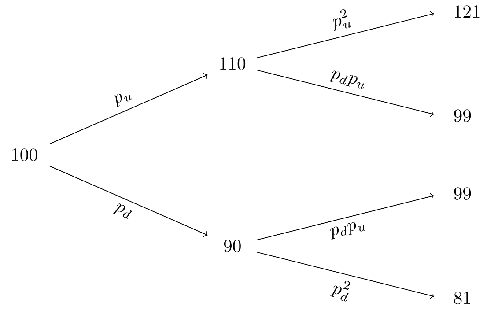
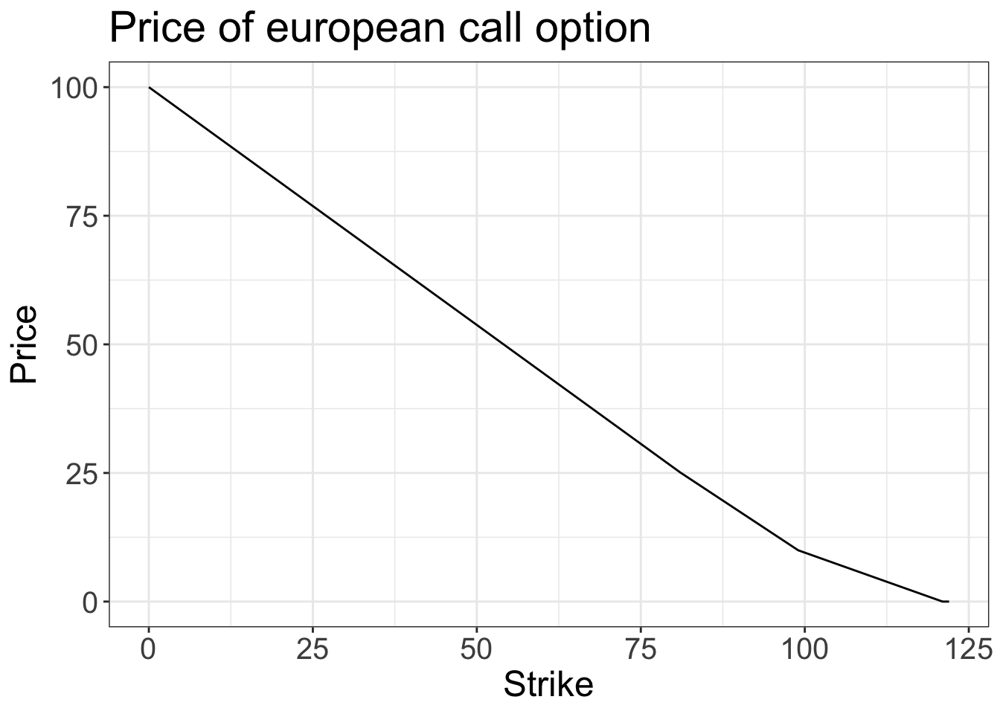
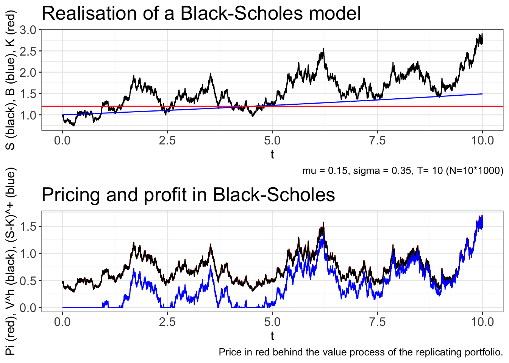

The study of this course is the European call option (and put option). This financial derivative is an agreement between two parties where the holder of the option has the right to “exercise” the derivative, at a future time \(t=T\). Exercising means buying an asset at a certain agreed opon price-strike \(K\). In the case of the put-option: the holder has the right (but not obligation) to sell the asset at the strike price \(K\). As such the derivative has the payoff
\[\text{Call}\ \text{option:}\hspace{10pt}\Phi(S_T)=(S_T-K)^+,\hspace{20pt}\text{Put}\ \text{option:}\hspace{10pt}\Phi(S_T)=(K-S_T)^+.\]
Our objective is to understand when an arbitrage exist and to find the fair price of these derivative. The strategy in pricing is finding a replicating portfolio with the same payoff as the option (with probability one) and then price the derivative accordingly.
In the one-period model we consider the simplest possible market. We have two distinct times \(t=0\) (today) and \(t=1\) (tomorrow) and we may buy any portfolio as a mixture of bonds and one stock. We denote the bonds price by \(B_t\) and the stocks price by \(S_t\) and we assume the following:
\[ B_0=1,\ B_1=1+R,\hspace{20pt}S_0=s,\ S_1=\left\{\begin{matrix}s\cdot u, & with\ probability\ p_u.\\s\cdot d, & with\ probability\ p_d.\end{matrix}\right. \]
We may introduce \(Z\) as the random variable
\[ Z=u\cdot (I)+d\cdot (1-I), \]
for an bernoulli variable \(I\) with succes probability \(p_u\). Naturally, we assume \(d\le (1+R)\le u\) (this is imperative to ensure no arbitrage as we will see).
We study any portfolio on the \((B,S)\) market as a vector \(h=(x,y)\) where \(x\) is the amount of bonds and \(y\) is the amount of stock held in the portfolio. Notice that we allow for shorting, that is \(x<0\) or \(y<0\). As such, we have that \(h\in \mathbb{R}^2\). In this we have made some unrealistic, but attractable assumptions included in the assumptions:
Given that we have chosen a portfolio \(h\) we may introduce the value process.
Definition 2.1. The value process of the porfolio \(h\in\mathbb{R}^2\) is the stochastic process
\[V^h_t=xB_t+yS_t,\ t=0,1.\]
Given this notation we may define what an arbitrage is.
Definition 2.2. An arbitrage is a portfolio \(h\) with the properties: 1) \(V^h_0=0\), 2) \(P(V^h_1\ge 0)=1\) and 3) \(P(V^h_1>0)>0\).
That is \(h\) is an deterministic money-machine where we at least never loose any money. Granted the bonds give a determinictic non-negative return, but an arbitrage does not require any money out of pocket. With the notion of an arbitrage we will show the first proposition regarding the choice of \(R,u,d\) as defined above.
Proposition 2.3. The one-period binomial model is arbitrage free if and only if the following inequality hold:
\[d\le (1+R)\le u.\tag{2.1}\]
The statement is proofed by contradiction. Assume that \(d>1+R\) holds. Then by definition \(u>d>1+R\). Notice that any portfolio satisfying \(V_0^h=0\) must satisfy
\[0=xB_0+yS_0=x+ys\iff x=-ys\]
That is for some choice \(y\) the only arbitrage candidate is the portfolio \(h=(-ys,y)\). Calculating the value at time \(t=1\) we have
\[V_1^h=-ys\cdot(1+R)+y\cdot s\cdot Z=ys(Z-1-R)\]
However since \(Z\ge d\) we have \(Z-(1+R)\ge 0\) and therefore an arbitrage (for \(y>0\)). The other inequality \(1+R>u\) follows analog steps. Simply choose some \(y<0\) and the result follows. \(\blacksquare\)
From inequality (2.1) we see that since \(1+R\) is between \(u\) and \(d\) we may find a pair \(q_d,q_u\ge 0\) with \(q_d+q_u=1\) such that
\[1+R=q_u\cdot u+q_d\cdot d.\]
This yields the important risk neutral valuation formula as summed op in the following definition
Definition 2.4. A probability measure \(Q\) is called a martingale meausre if the following condition holds:
\[S_0=\frac{1}{1+R}E^Q[S_1].\]
The above measure \(Q\) is the measure \(Q(Z=d)=q_d\) and \(Q(Z=u)=q_u\) for the binomial model. This does in fact yield the risk neautral valuation formula:
\[\begin{align*} S_0&=\frac{1}{1+R}E^Q[S_1]=\frac{1}{1+R}(Q(Z=d)\cdot d\cdot s+Q(Z=u)\cdot u\cdot s)\\ &=s\frac{1}{1+R}(q_d\cdot d+q_u\cdot u)=s, \end{align*}\]
where we simply use \(1+R=q_d\cdot d+q_u\cdot u\). We call this the risk neautral valuation formula because it in some sense gives an expected discounted value of the future stock price. We end this endavour with reformulating the arbitrage proposition and determining the values of the \(Q\)-measure.
Proposition 2.5. The one-period binomial model is arbitrage free if and only if there exists a martingale measure \(Q\).
Proposition 2.6. The one-period binomial model has martingale probabilities given by:
\[\left\{\begin{matrix}q_u=\frac{(1+R)-d}{u-d},\\ q_u=\frac{u-(1+R)}{u-d}.\end{matrix}\right.\]
This chapter revolves around the financial derivative and we start by stating the definition of the financial derivative.
Definition 2.7. A contingent claim (financial derivative) is any stochastic variable \(X\) of the form \(\Phi(Z)\), where \(Z\) is the stochastic varible driving the stock price process.
We may also call the function \(\Phi\) the contract function as it states how the contract is resolved once the stochastic variable \(Z\) has been realised. Our objective is now to study, what a buyer of said contract would have to pay at any given time \(t\). We call the fair price of \(X\) at time \(t\): \(\Pi_t[X]\). As such it is easy to see that the fair price at the time of maturity \(T\) is simply the payout \(X\) i.e. \(\Pi_T[X]=X\). Our strategy is to find a replicating portfolio \(h\) and determine the price of said portfolio.
Definition 2.8. A contingent claim \(X\) can be replicated, or said to be reachable if there exist a portfolio \(h\) such that
\[ V_1^h=X, \]
with probability one. In that case, we say that the portfolio \(h\) is a hedging portfolio or a replicationg portfolio. If all claims can be replicated we say that the market is complete.
Our pricing strategy is then to determine the value process of the replicating portfolio and then by the first pricing principle below we say that the price is imply the value of the replicating portfolio.
Pricing principle 1. If a clain \(X\) is reachable with replicating portfolio \(h\), then the only reasonable price process for \(X\) is given by
\[ \Pi_t[X]=V_t^h. \]
Notice, that this assumes that a replicating portfolio exist and even so we have a uniqueness statement to solve. We end this section by writing two important results.
Proposition 2.9. Suppose that a claim \(X\) is reachable with replicating portfolio \(h\). Then any price at time \(t\ge 0\) of the claim \(X\) other than the value process of \(h\) will lead to an arbitrage on the extended market \((B,S,X)\).
Proposition 2.10. If the one-period binomial model is free of arbitrage, then it is also complete.
The hedging portfolio in the one-period binomial model is given by the portfolio \((x,y)\) below
\[ x=\frac{1}{1+R}\cdot\frac{u\Phi(d)-d\Phi(u)}{u-d},\hspace{20pt}y=\frac{1}{s}\cdot\frac{\Phi(u)-\Phi(d)}{u-d}. \]
We see that since the one-period model is complete we can price any contingent claim and we see that
\[\begin{align*} \Pi_0[X]&=\frac{1}{1+R}\cdot\frac{u\Phi(d)-d\Phi(u)}{u-d}+s\frac{1}{s}\cdot\frac{\Phi(u)-\Phi(d)}{u-d}\\ &=\frac{1}{1+R}\left\{\frac{u\Phi(d)-d\Phi(u)}{u-d}+(1+R)\frac{\Phi(u)-\Phi(d)}{u-d}\right\}\\ &=\frac{1}{1+R}\left\{\frac{(1+R)-d}{u-d}\Phi(u)+\frac{u-(1+R)}{u-d}\Phi(d)\right\}\\ &=\frac{1}{1+R}E^Q[X]. \end{align*}\]
i.e. the price at time \(t=0\) should simply be the expected discounted payout according to the martingale measure. This leads to the important pricing proposition:
Proposition 2.11. If the one-period binomial model is free of arbitrage, then the arbitrage free price of a contingent claim \(X\) is given by
\[ \Pi_0[X]=\frac{1}{1+R}E^Q[X].\tag{2.4} \]
Here the martingale measure \(Q\) is uniquely determined by the relation
\[ S_0=\frac{1}{1+R}E^Q[S_1],\tag{2.5} \]
and the explicit expressions for \(q_u\) and \(q_d\) are given in proposition 2.6. Furthermore the claim \(X\) can be replicated using the portfolio
\[\begin{align*} x&=\frac{1}{1+R}\cdot\frac{u\Phi(d)-d\Phi(u)}{u-d},\tag{2.6}\\ y&=\frac{1}{s}\cdot\frac{\Phi(u)-\Phi(d)}{u-d}.\tag{2.7} \end{align*}\]
The one-period binomial model can easily be extended to a multi-period model, by assuming that the bond and stock pricess evolve by the processes:
\[ t\ge1:\ B_t=(1+R)B_{t-1}\hspace{20pt}\text{and}\hspace{20pt}B_0=1, \]
\[ t\ge1:\ S_t=Z_{t-1}S_{t-1}\hspace{20pt}\text{and}\hspace{20pt}S_0=s, \]
where we obviously have that \(B_t=(1+R)^t\) for \(t\ge 0\). In the above \(Z_t\) is \(u\) with probability \(p_u\) and \(d\) with probability \(p_d\). In this context, we need to define a portfolio in terms of a strategy.
Definition 2.13. A portfolio strategy is a stochastic process on \(\{1,...,T\}\)
\[ h=\left\{h_t=(x_t,y_t);\ t=1,...,T\right\} \]
such that \(h_t\) is a function of \(S_0,S_1,...,S_{t-1}\). For a given portfolio strategy \(h\) we set \(h_0=h_1\) by convention. The associated value process corresponding to the portfolio \(h\) is defined by
\[ V_t^h=x_t(1+R)+y_tS_t. \]
Given this notation we may define what an arbitrage is, but first we introduce the notion of a self-financing portfolio. A self-financing portfolio in an intuative sense is a portfolio that is not withdrawn from or deposited into.
Definition 2.14. A portfolio strategy \(h\) is said to be self-financing if the following condition holds for all \(t=0,...,T-1\):
\[ x_t(1+R)+y_tS_t=x_{t+1}+y_{t+1}S_t. \]
The above equation says that the portfolio purchased at time \(t\) and helt until \(t+1\) \((x_{t+1},y_{t+1})\) can only be financed by the market value of the portfolio held from \([t-1,t)\) i.e. \((x_{t},y_{t})\). We now define an arbitrage.
Definition 2.15. An arbitrage is a self-financing portfolio \(h\) with the properties: 1) \(V^h_0=0\), 2) \(P(V^h_T\ge 0)=1\) and 3) \(P(V^h_T>0)>0\).
The multiperiod binomial model has an just like the oneperiod model a result regarding when an arbitrage exists.
Lemma 2.16. If \(d\le (1+R)\le u\) then the multiperiod model is arbitrage-free.
As one can see, the multiperiod model is rather similar to the one period model. We wil in the following summarise equivalent statements for the multiperiod model as the ones in the oneperiod model.
Definition 2.17. The martingale probabilities \(q_u\) and \(q_d\) are defined as the probabilities for which the relation below holds.
\[ s=\frac{1}{1+R}E^Q[S_{t+1}\ \vert\ S_t]. \]
Proposition 2.18. The martingale probabilities \(q_u\) and \(q_d\) are given by
\[ \left\{\begin{matrix}q_u=\frac{(1+R)-d}{u-d},\\ q_u=\frac{u-(1+R)}{u-d}.\end{matrix}\right. \]
Definition 2.19. A contingent claim is a stochastic variable \(X\) of the form
\[ X=\Phi(S_T), \]
where the contract function \(\mathbf{\Phi}\) is some given real valued function.
Definition 2.20. A given contingent claim \(X\) is said to be reachable if there exists a self-financing portfolio \(h\) such that
\[ V_T^h=X, \]
with probability one. In that case we say that the portfolio \(h\) is a hedging portfolio or a replicating portfolio. If all claims can be replicated we say that the market is (dynamically) complete.
Pricing principle 2. If a claim \(X\) is reachable with replicating portfolio \(h\), then the only reasonable price process for \(X\) os given by
\[ \Pi_t[X]=V_t^h,\ t=0,1,...,T. \]
Proposition 2.21. Assume \(X\) is reachable by \(h\), then any price other than \(V_t^h\) for some \(t\ge 0\) leads to an arbitrage opportunity.
Proposition 2.22. The multiperiod model is complete, i.e. every claim can be replicated by a self-financing portfolio.
Proposition 2.24. (Binomial algorithm) Consider a \(T\)-claim \(X=\Phi(S_T)\). Then this claim can be replicated using af self-financing portfolio. If \(V_t(k)\) denotes the value of the portfolio at the node \((t,k)\) (\(k\) referring to \(k\) amount of up-moves for the stock), then \(V_t(k)\) can be computed recursively by the scheme
\[ \left\{\begin{matrix}V_t(k)=\frac{1}{1+R}\left\{q_uV_{t+1}(k+1)+q_dV_{t+1}(k)\right\},\\ V_T(k)=\Phi(su^kd^{T-k}).\end{matrix}\right. \]
where the martingale probabilities \(q_u\) and \(q_d\) are given by
\[ \left\{\begin{matrix}q_u=\frac{(1+R)-d}{u-d},\\ q_u=\frac{u-(1+R)}{u-d}.\end{matrix}\right. \]
With the notation as above, the hedging portfolio is given by
\[ \left\{\begin{matrix}x_t(k)=\frac{1}{1+R}\cdot\frac{uV_t(k)-dV_t(k+1)}{u-d},\\ y_t(k)=\frac{1}{S_{t-1}}\cdot\frac{V_t(k+1)-V_t(k)}{u-d}.\end{matrix}\right. \]
In particular, the arbitrage free price of the claim at \(t=0\) is given by \(V_0(0)\).

Consider \(R=0.04\), \(s=100\), \(u=1.1\), \(d=0.9\), \(p_u=0.6\) and \(p_d=0.4\). We consider a model of length \(T=2\) and we want to evaluate the price of the european call option with srike \(K=90\) that is the contingent claim
\[ X=(S_T-K)^+,\hspace{20pt}\Phi(s)=(s-K)^+. \]
For each time \(t\) we know the replicating portfolio, if we know the payoff the following period. Therefore we start from the leaves of the tree and work towards the root. Since the strike price is \(K=90\) the end result will be the following payoffs:
\[\begin{align*} u^2:\hspace{20pt}&(121-90)^+=31\\ ud:\hspace{20pt}&(99-90)^+=9\\ du:\hspace{20pt}&(99-90)^+=9\\ d^2:\hspace{20pt}&(81-90)^+=0 \end{align*}\]
Therefore by the risk neautral valuation formula with \(q_u=\frac{(1+R)-d}{u-d}=0.7\) and \(q_d=\frac{u-(1+R)}{u-d}=0.3\) we have that the cost of the replicating portfolio at time \(t=1\) is respectively
\[\begin{align*} u:\hspace{20pt}&\frac{1}{1+R}\left\{31\cdot q_u + 9 \cdot q_d\right\}\approx 23.46\\ d:\hspace{20pt}&\frac{1}{1+R}\left\{9\cdot q_u + 0 \cdot q_d\right\}\approx 6.06 \end{align*}\]
To replicate this payoff at time \(t=1\) we can use the risk neutral valuation formula once more to find the base cost of the replicating portfolio i.e. the price of \(X\) at time \(t=0\)
\[ \frac{1}{1+R}\left\{23.46\cdot q_u + 6.06 \cdot q_d\right\}\approx 17.54. \]
Working from the root to the leaves we can now calculate the hedging portfolio at time \(t=0,1\) for each path. For time \(t=0\) we calculate
\[\begin{align*} x=&\frac{1}{1+R}\cdot \frac{u\cdot 6.06-d\cdot 23.46}{u-d}\approx -69.46,\\ y=&\frac{1}{s}\cdot\frac{23.46-6.06}{u-d}\approx0.87 \end{align*}\]
We see by calculations that this does indeed replicate the payoff at time \(t=1\):
\[\begin{align*} u:\hspace{20pt}&V_1^h=(1+R)\cdot x + 110\cdot y\approx 23.46,\\ d:\hspace{20pt}&V_1^h=(1+R)\cdot x + 90\cdot y\approx 6.06. \end{align*}\]
We also see by calculation that the initial portfolio does cost the expected 17.54 as
\[ x\cdot 1+y\cdot100=87-69.46=17.54. \]
Following these steps at time \(t=1\) the portfolios \((-86.54,1)\) (for the up-scenario) and \((-38.94,0.5)\) (for the down-scenario) would arise. Notice when calculating \(y\) one has to use the current price \(S_1=S_0\cdot Z\) not \(S_0\). One should also check by similar calculations as above, that these portfolios does indeed replicate the payoff of the contingent claim \(X\). \(\square\)
Proposition 2.25. The arbitrage free price at \(t=0\) of a \(T\)-claim \(X\) is given by
\[ \Pi_0[X]=\frac{1}{(1+R)^T}E^Q[X] \]
where \(Q\) denotes the martingale measure, or more explicitly
\[ \Pi_0[X]=\frac{1}{(1+R)^T}\sum_{k=0}^T\binom{T}{k}q_u^kq_d^{T-k}\Phi(su^kd^{T-k}). \]
R <- 0.04
s <- 100
u <- 1.1
d <- 0.9
p_u <- 0.6
p_d <- 0.4
q_u <- (1+R-d)/(u-d)
q_d <- (u-1-R)/(u-d)
cap_t <- 2
#Test for K=90
K <- 90
pi_0 <- (1+R)**(-cap_t)*sum(
choose(cap_t,0:cap_t)*q_u**(0:cap_t)*q_d**(cap_t - 0:cap_t)*pmax(s*u**(0:cap_t)*d**(cap_t - 0:cap_t)-K,0)
) # = 17.53883
pi_0 <- unlist(lapply(0:ceiling(s*u**cap_t), function(K){
(1+R)**(-cap_t)*sum(
choose(cap_t,0:cap_t)*q_u**(0:cap_t)*q_d**(cap_t - 0:cap_t)*pmax(s*u**(0:cap_t)*d**(cap_t - 0:cap_t)-K,0)
)
}))
library(dplyr)
library(ggplot2)
data.frame(K = 0:ceiling(s*u**cap_t),
Pi_0 = pi_0) %>%
ggplot(.) + geom_line(aes(x=K,y=Pi_0)) +
labs(title = "Price of european call option",
x = "Strike", y = "Price") +
theme_bw() +
theme(axis.text = element_text(size = 15),
title = element_text(size = 18))
We follow an analog example as the one after proposition 2.24. Let \(K=90\) and we see that
\[\begin{align*} &\Pi_0[X]\\ &=\frac{1}{(1+0.04)^2}\sum_{k=0}^2\binom{2}{k}\cdot0.7^k\cdot0.3^{2-k}\cdot\Phi(100\cdot 1.1^k\cdot0.9^{2-k})\\ &=0.9245562\cdot\left(\underbrace{1\cdot 1\cdot0.09\cdot0}_{k=0}+\underbrace{2\cdot 0.7\cdot0. 3\cdot 9}_{k=1}+\underbrace{1\cdot 0.49\cdot1\cdot31}_{k=2}\right)\\ &=0.9245562\cdot\left(0+3.78+15.19\right)\\ &=17.53883 \end{align*}\]
Since we know that \(K\) must meaningfully range in \([0,121]\) we could try to calculate the price of the contingent claim at time \(t=0\) for all integers in this interval. We see that the price range between \(S_0\) and 0 as expected. One can also see that the price changes slope at the prices 99 and 121 as the function is linear in \(\Phi\) and som realisations loose any effect on the price when the strike is higher than the outcome. \(\square\)
Proposition 2.26. The condition \(d<(1+R)<u\) is necessary and sufficient condition for absence of arbitrage.
In the previous we had the simpel model where we only had one stochastic asset \(S\) and only one stochastic variable \(Z\) determining the future stock price. Now we will generelise this model by introducing \(N\) assets and introducing som stochastic behaviour to the system.
We consider the market consisting of a collection of stochastic prices assets \(i=1,...,N\) with \(N\)-dimensional price process.
\[ S_t=\begin{bmatrix} S_t^1\\ \vdots\\ S_t^N\end{bmatrix} \]
We now assume that \(S_t\) is defined on a background space with finite sample space \(\Omega = \{\omega_1,...,\omega_M\}\) with associated probabilities \(p_j=P(\omega_j)\), \(j=1,...,M\). We can then for eact time \(t=1,...,T\) define the \(N\times M\) matrix \(D_t\) as such
\[ D_t=\begin{bmatrix} S_t^1(\omega_1)&\cdots &S_t^1(\omega_M)\\ \vdots &\ddots & \vdots\\ S_t^N(\omega_1) &\cdots&S_t^M(\omega_M)\end{bmatrix}. \]
We will assume that \(S_0^1>0\) and \(S_1^1(\omega_j)>0\), \(j=1,...,M\).
We now define a portfolio as an \(N\)-dimensional row vector
\[ h=\begin{bmatrix} h^1, \dots,h^N\end{bmatrix} \]
representing the amount of assets held at time \(t=0\) and held until \(t=1\). The value process is then
\[ V^h_t=h\cdot S_t=\sum_{i=1}^N h^iS_t^i,\ t=0,1. \]
For a given \(\omega_j\in\Omega\) we have the realisation
\[ V_t^h=hS_t(\omega_j)=hd_j=(hD)_j. \]
Definition 3.1. The portfolio \(h\) is an arbitrage portfolio fil it satisfies the conditions: \(V_0^h=0\), \(P(V_1^h\ge 0)=1\) and \(P(V_1^h>0)>0\).
Lemma 3.2. (Farkas’ Lemma) Suppose that \(d_0,d_1,...,d_M\) are column vectors in \(\mathbb{R}^N\). Then exactly one of the following problems possesses a solution.
- Problem 1: There exist \(\lambda_1,...,\lambda_M\ge0\) such that \(d_0=\sum_{j=1}^M\lambda_jd_j\).
- Problem 2: There exist \(h\in\mathbb{R}^N\) such that \(h^\top d_0<0\) and \(h^\top d_j\ge 0\) for \(j=1,...,M\).
We now investegate this system for any possible arbitrage portfolios. However first we acknowledge that there exist a nominal price system \(S_t\) and a normalised price system \(Z_t\). The latter we define as the nominel pricess under the numeraire \(S_t^1\) that is
\[ Z_t=\begin{bmatrix} S_t^1/S_t^1\\ S_t^2/S_t^1\\ \vdots\\ S_t^N/S_t^1\end{bmatrix}=\begin{bmatrix} 1\\ S_t^2/S_t^1\\ \vdots\\ S_t^N/S_t^1\end{bmatrix}. \]
The reason for introducing the normalized price system is that we can without much effort translate results in this system to the nominal system and the normalised system is easier to analize. For this, however, we need af few results.
Lemma 3.3. With notation as above, the following hold.
- The \(Z_t\) value process i related to the \(S_t\) value process by \[ V_t^{h,Z}=hZ_t=\frac{1}{S_t^1}V_t^h. \]
- A portfolio is an arbitrage in the \(S_t\) system if and only if there is an arbitrage in the \(Z_t\) system.
- In the \(Z_t\) price system, the numeraie asset \(Z^1\) has unit constant prices i.e. \(Z_t^1=1\) for all \(t\ge 0\).
One of the reason that the normalised system is attractable is that the numeraire asset is constant i.e. risk free in the normalised system. Let us formulate our first main result.
Proposition 3.4. The market is arbitrage free if and only iff there exists strictly positive real numbers \(q_1,...,q_M\ge 0\) with \(q_1+\cdots + q_M=1\) (probability vector) such that the following vector equality holds
\[ \begin{bmatrix} Z_0^1\\ \vdots\\ Z_N^1\end{bmatrix}=\begin{bmatrix} Z_1^1(\omega_1)\\ \vdots\\ Z_1^N(\omega_1)\end{bmatrix}q_1+\cdots +\begin{bmatrix} Z_1^1(\omega_M)\\ \vdots\\ Z_1^N(\omega_M)\end{bmatrix}q_M.\tag{3.3} \]
Definition 3.5. Given the objective probability measure \(P\) on \((\Omega,\mathcal{F},P)\), we say that another probability measure \(Q\) defined on \(\Omega\) is equivalent to \(P\) if
\[ \forall A\in\mathcal{F}:P(A)=0\iff Q(A)=0, \]
or equivalently
\[ \forall A\in\mathcal{F}:P(A)=1\iff Q(A)=1. \]
Definition 3.7. Consider the market model above and set \(S^1\) as the numeraire asset. We say that a probability measure \(Q\) defined on \(\Omega\) is a martingale measure if it satisfies the following conditions:
- \(Q\) is equivalent to \(P\), i.e. \(Q\sim P\).
- For every \(i=1,...,N\), the normalized asset price process \[ Z_t^i=\frac{S_t^i}{S_t^1}, \] is martingale under the measure \(Q\).
Theorem 3.8. (First Fundamental Theorem) Given a fixed numeraire, ther market is free of arbitrage possibilities if and only if there exists a martingale measure \(Q\).
By assuming that the numeraire asset is risk free (i.e. does not depend on \(\omega\)) then by scaling we can derive the short interest rate as
\[ 1+R=\frac{S_1^1}{S_0^1}. \]
With this in mind we can formulate theorem 3.8 in its more widely used form.
Theorem 3.9. (First Fundamental Theorem) Assume that there exist a risk free asset, and denote the corresponding risk free interest rate by \(R\). Then the market is arbitrage free if and only if there exist a measure \(Q\sim P\) such that
\[ S_0^i=\frac{1}{1+R}E^Q[S_1^i],\hspace{20pt}\text{for all}\ i=1,...,N.\tag{3.9} \]
Moving forward we will assume that there exist a risk free asset and we will denote it by \(B_t\) (\(B_t=S^1_t/S^1_0\)).
Definition 3.10. A contingent claim is any random variable \(X\), defined on the sample space \(\Omega\).
To ensure no arbitrage in the extended market containing the \(N\) assets and the contingent claim we can apply the first fundamental pricing theorem on the extended market.
Proposition 3.11. Consider a given claim \(X\). In order to avoid arbitrage, \(X\) must then be priced according to the formula
\[ \Pi_0[X]=\frac{1}{1+R}E^Q[X],\tag{3.10} \]
where \(Q\) is a martingale measure for the underlying market \((\Pi,S^1,...,S^N)\).
Given that a market is arbitrage-free we may run into a uniqueness issue when determining the price of a contingent claim. If a martingale measure exist we will very much like it to be unique as this will ensure that the price from the risk neutral valuation formula is unique. To this we need the market to be complete.
Definition 3.12. Consider a contingent claim \(X\). If there exists a portfolio \(h\), based on the underlying assets, such that
\[ V_1^h=X,\ \text{with probability 1}\tag{3.11} \]
i.e.
\[ V_1^h(\omega_j)=X(\omega_j),\ j=1,...,M,\tag{3.12} \]
then we say that \(X\) is replicated, or hedged by \(h\). Such a portfolio \(h\) is called a replicating, or hedging portfolio. If every contingent claim can be replicated, we say that the market is complete.
We can now formulate a proposition on when the market is complete in terms of the matrix \(D\).
Proposition 3.13. The market is complete if and only if the rows of the matrix \(D\) span \(\mathbb{R}^M\), i.e. if and only if \(D\) has rank \(M\).
Now we formulate the second fundamental pricing theorem in terms of the martingale measure \(Q\).
Proposition 3.14. (Second Fundamental Theorem) Assume that the model is arbitrage free i.e. \(Q\) exist. Then the market is unique if and only if the martingale measure is unique.
Definition 3.16. The random variable \(L\) on \(\Omega\) is defined by
\[ L(\omega_i)=\frac{q_i}{p_i},\hspace{20pt} i=1,...,M. \]
Definition 3.17. Assume the absence of arbitrage, and fix a martingale measure \(Q\). With notation as above, the stochastic discount factor (or “state price deflator”) is the random variable \(\Lambda\) on \(\Omega\) by
\[ \mathbf{M}(\omega)=\frac{1}{1+R}\cdot L(\omega).\tag{3.19} \]
Proposition 3.18. The arbitrage free price of any claim \(X\) is given by the formula
\[ \Pi_0[X]=E^P[\mathbf{M}\cdot X] \]
where \(\mathbf{M}\) is a stochastic discount factor.
The theory of conditional expectation is well-known from courses on the bachelor. Because of this we will only summarise the most important results.
We consider a background space \((\Omega,\mathcal{F},P)\) and a sub-sigma algebra \(\mathcal{G}\subseteq \mathcal{F}\). We assume that some stochastic variable is \(\mathcal{F}\)-measurable, that is the mapping \(X : (\Omega,\mathcal{F},P) \to (\mathbb{R},\mathbb{B},m)\) is \(\mathcal{F}-\mathbb{B}\)-measurable i.e. \(\forall B\in\mathbb{B} : \{X\in B\}\in\mathcal{F}\). For some random variable \(Z\) defined on the subspace \((\Omega,\mathcal{G},P)\), we say that \(Z\) is the conditional expectation of \(X\) given \(\mathcal{G}\) if
\[ \forall G\in\mathcal{G} : \int_G Z(\omega)\ dP(\omega)=\int_G X(\omega)\ dP(\omega). \]
This fact is summed up in the definition below.
Definition B.27. (Conditional expectation) Let \((\Omega,\mathcal{F},P)\) be a probability space and \(X\) a random variable in \(L^1(\Omega,\mathcal{F},P)\) (\(\vert X\vert\) is integrable). Let furthermore \(\mathcal{G}\) be a sigma-algebra such that \(\mathcal{G}\subseteq \mathcal{F}\). If \(Z\) is a random variable with the properties that:
- \(Z\) is \(\mathcal{G}\)-measurable.
- For every \(G\in\mathcal{G}\) it holds that \[\int_G Z(\omega)\ dP(\omega)=\int_G X(\omega)\ dP(\omega).\]
Then we say that \(Z\) is the conditional expectation of \(X\) given the sigma-algebra \(\mathcal{G}\). In that case we denote \(Z\) by the symbol \(E[X\ \vert\ \mathcal{G}]\).
We see that from the above it always holds that \(X\) satisfies (ii). It does not, however, always hold that \(X\) is \(\mathcal{G}\)-measurable. Given this fact it is not trivial that a random variable \(E[X\ \vert\ \mathcal{G}]\) even exists. This nontriviality is fortunatly resolved by the Radon-Nikodym theorem.
Theorem B.28. (Existance and uniqueness of Conditional expectation) Let \((\Omega,\mathcal{F},P)\), \(X\) and \(\mathcal{G}\) be given as in the definition above. Then the following holds:
- There will always exist a random variable \(Z\) satisfying conditions (i)-(ii) above.
- The variable \(Z\) is unique, i.e. if both \(Y\) and \(Z\) satisfy (i)-(ii) then \(Y=Z\) \(P\)-a.s.
This result ensures that we may condition on any sigma-algebra for instance \(\mathcal{G}=\sigma(Y)\) in that case we (pure notation) write
\[ E[X\ \vert\ \sigma(Y)]=E[X\ \vert\ Y],\hspace{20pt}\sigma(Y)=\sigma\left(\left\{ Y\in A,\ A\in\mathbb{B}\right\}\right). \]
In the above \(\sigma(Y)\) is simply the smallest sigma-algebra containing all the pre-images of \(Y\), that is the smallest sigma-algebra making \(Y\) measurable! Giving this foundation there are a few properties conditional expectation have which is rather useful (for instance the tower property).
Below we assume: Let \((\Omega,\mathcal{F},P)\) be a probability space and \(X,Y\) be random variables in \(L^1(\Omega,\mathcal{F},P)\).
Proposition B.29. (Monotinicity/Linearity of Conditional expectation) The following holds:
\[X\le Y\ \Rightarrow\ E[X\ \vert\ \mathcal{G}]\le E[Y\ \vert\ \mathcal{G}],\hspace{20pt}P-\text{a.s.}\] \[E[\alpha X + \beta Y\ \vert\ \mathcal{G}]=\alpha E[X\ \vert\ \mathcal{G}]+ \beta E[Y\ \vert\ \mathcal{G}],\hspace{20pt}\forall \alpha,\beta\in\mathbb{R}.\]
Proposition B.30. (Tower property) Assume that it holds that \(\mathcal{H}\subseteq\mathcal{G}\subseteq\mathcal{F}\). Then the following hold:
\[E[E[X\vert \mathcal{G}]\vert\mathcal{H}]=E[X\vert \mathcal{H}],\] \[E[X]=E[E[X\vert \mathcal{G}]].\]
Proposition B.31. Assume \(X\) is \(\mathcal{G}\) and that both \(X,Y\) and \(XY\) are in \(L^1\) (only assuming \(Y\) is \(\mathcal{F}\)-measurable), then
\[E[X\vert\mathcal{G}]=X,\hspace{20pt}P-\text{a.s.}\] \[E[XY\vert\mathcal{G}]=XE[Y\vert\mathcal{G}],\hspace{20pt}P-\text{a.s.}\]
Proposition B.32. (Jensen inequality) Let \(f:\mathbb{R}\to\mathbb{R}\) be a convex (measurable) function and assume \(f(X)\) is in \(L^1\). Then
\[f(E[X\vert\mathcal{G}])\le E[f(X)\vert\mathcal{G}],\hspace{20pt}P-\text{a.s.}\]
Proposition. *(Bjork, B.37.) Let \((\Omega,\mathcal{F},P)\) be a given probability space, let \(\mathcal{G}\) be a sub-sigma-algebra of \(\mathcal{F}\), and let \(X\) be a square integrable random variable. Consider the problem of minimizing \[E\left[(X-Z)^2\right]\] where \(Z\) is allowed to vary over the class of all square integrable \(\mathcal{G}\) measurable random variables. The optimal solution \(\hat{Z}\) is then given by. \[\hat{Z}=E[X\vert\mathcal{G}].\]
Let \(X\in L^2(\Omega,\mathcal{F},P)\) be a random variable. Now consider an arbitrary \(Z\in L^2(\Omega,\mathcal{G},P)\). Recall that \(\mathcal{G}\subset \mathcal{F}\) and so \(X\) is also in \(Z\in L^2(\Omega,\mathcal{G},P)\), as it is bothe square integrable and \(\mathcal{G}\)-measurable. Then
\[E\left[Z\cdot(X-E[X\vert\mathcal{G}])\right]=E\left[Z\cdot X\right]-E\left[Z\cdot E[X\vert\mathcal{G}]\right].\]
Then by using the law of total expectation and secondly that \(Z\) is \(\mathcal{G}\)-measurable we have that
\[E\left[Z\cdot X\right]=E\left[E[Z\cdot X\vert\mathcal{G}]\right]=E\left[Z\cdot E[ X\vert\mathcal{G}]\right].\]
Combining the two equations gives the desired result. Obviously, we have that
\[X-Z=X-Z+E[X\vert\mathcal{G}]-E[X\vert\mathcal{G}]=(X-E[X\vert\mathcal{G}])+(E[X\vert\mathcal{G}]-Z).\]
Then squaring the terms gives
\[(X-Z)^2=(X-E[X\vert\mathcal{G}])^2+(E[X\vert\mathcal{G}]-Z)^2+2(X-E[X\vert\mathcal{G}])(E[X\vert\mathcal{G}]-Z)\]
Taking expectation on each side and using linearity of the expectation we have that
\[E[(X-Z)^2]=E\left[(X-E[X\vert\mathcal{G}])^2\right]+E\left[(E[X\vert\mathcal{G}]-Z)^2\right]+2E\left[(X-E[X\vert\mathcal{G}])(E[X\vert\mathcal{G}]-Z)\right].\]
We can now use that \(E[X\vert\mathcal{G}]-Z\) is \(\mathcal{G}\)-measurable with the above result on the last term.
\[E[(X-Z)^2]=E\left[(X-E[X\vert\mathcal{G}])^2\right]+E\left[(E[X\vert\mathcal{G}]-Z)^2\right].\]
Now since \(X\) is given the term \(E\left[(X-E[X\vert\mathcal{G}])^2\right]\) is simply a constant not depending on the choice og \(Z\). The optimal choice of \(Z\) is then \(E[X\vert\mathcal{G}]\) since this minimizes the second term. The statement is then proved.
Let \(X\) be a random variable with distribution function \(F(x)=P(X\le x)\) and \(Y\) be a random variable with distribution function \(G(y)=P(Y\le y)\).
Definition. The moment generating function or Laplace transform of \(X\) is
\[\psi_X(\lambda)=E\left[e^{\lambda X}\right]=\int_{-\infty}^\infty e^{\lambda x}dF(x)\]
provided the expectation is finite for \(\vert\lambda\vert<h\) for some \(h>0\).
The MGF uniquely determine the distribution of a random variable, due to the following result.
Theorem. (Uniqueness) If \(\psi_X(\lambda)=\psi_Y(\lambda)\) when \(\vert\lambda\vert<h\) for some \(h>0\), then \(X\) and \(Y\) has the same distribution, that is, \(F=G\).
There is also the following result of independence for Moment generating functions.
Theorem. (Independence) If
\[E\left[e^{\lambda_1X+\lambda_2Y}\right]=\psi_X(\lambda_1)\psi_Y(\lambda_2)\]
for \(\vert\lambda_i\vert<h\) for \(i=1,2\) for some \(h>0\), then \(X\) and \(Y\) are independent random variables.
Definition. (Bjork, def. 4.1) A stochastic process \(W\) is called a Brownian motion or Wiener process if the following conditions hold
- \(W_0=0\).
- The process \(W\) has independent increments, i.e. if \(r<s\le t< u\) then \(W_u-W_t\) and \(W_s-W_r\) are independent random variables.
- For \(s<t\) the random variable \(W_t-W_s\) has the Gaussian distribution \(\mathcal{N}(0,t-s)\).
- \(W\) has continuous trajectories i.e. \(s\mapsto W(s;\omega)\) i continuous for all \(\omega \in\Omega\).
#Example of trajectory for BM
set.seed(1)
t <- 0:1000
N <- rnorm(
n = length(t)-1, #initial value = 0
mean = 0, #incements mean = 0
sd = sqrt(t[2:length(t)] - t[1:(length(t)-1)]) #increment sd = sqrt(t-s)
)
W <- c(0,cumsum(N))
As one can see from the simulated sample path on the right, the Brownian motion is rather irratic. In fact, the process varies infinitely on any interval with length greater than 0. This gives some of the characteristics of the process including that: \(W\) is continuous and \(W\) is non-differential everywhere. This irratic behaviour is summed up in the theorem.
Theorem 4.2. A Brownian motions trajectory \(t\mapsto W_t\) is with probability one nowhere differential, and it has locally infinite total variation.
Filtrations is widely used in stochastic processes, as they allow for the concept of knowledge/information. This is useful when considering mean-values of future states but in an increasing information setting. For this we introduce the term adapted processes.
Definition B.17. (Adapted process) Let \((\mathcal{F}_t)_{t\ge 0}\) be a filtration on the probability space \((\mathcal{F}_t)_{t\ge 0}\). Furthermore, let \((X_t)_{t\ge 0}\) be a stochastic process on the same space. We say that \(X_t\) is adapted to the filtration \(\mathbf{F}\) if
\[X_t\ \text{ is }\ \mathcal{F}_t-\text{measurable},\hspace{20pt}\forall t\ge 0.\]
Obviously, we may introduce the natural filtration \(\mathcal{F}^X_t\) given by the tragetory of the process \(X_t\):
\[\mathcal{F}^X_t=\sigma(\{X_s,\ s\le t\}).\]
Indeed, \(X_t\) is adapted to this filtration.
Definition. Let \(M_t\) be a stochastic process defined on a background space \((\Omega,\mathcal{F},P)\). Let \((\mathcal{F}_t)_{t\ge 0}\) be a filtration. If \(M_t\) is adapted to the filtration \(\mathcal{F}_t\), \(E\vert M_t\vert <\infty\) and
\[E[M_t\vert \mathcal{F}_s]=M_s,\hspace{20pt}P-\text{a.s.}\]
holds for any \(t>s\) we say that \(M_t\) is a martingale (\(\mathbf{F}\)-martingale). If the above has \(\le\) or \(\ge\) we say that \(M_t\) is either a submartingale or supermartingale respectively.
Naturally, this defintions may easily be extended to discrete models and we have the trivial equality:
\[E[M_t-M_s\ \vert\ \mathcal{F}_s]=0.\]
Martingales is useful, when proofing probalistic statements as the posses tractable properties. A useful technique often include the construction of the martingale
\[M_t=E[X\ \vert\ \mathcal{F}_t].\]